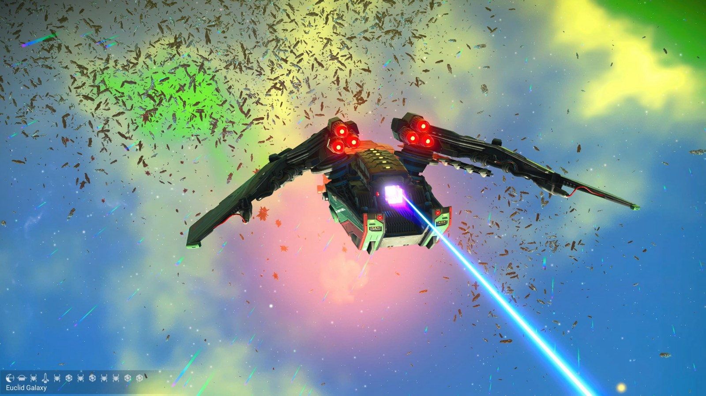
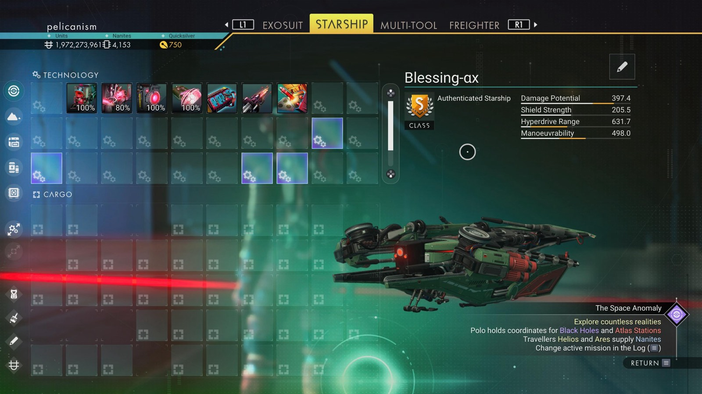

Waypoint 23
Tuvaley VI


- Portal glyphs
- 407D7A7A77AA
- Eclipse · Sunset · Bug · Rocket · Bug · Voxel · Bug · Voxel · Bug · Bug · Voxel · Voxel
- Distance from core
- 1,110,138 LY
- Jump from previous
- 1,839 LY
- Planet coordinates
- +23.85, +175.59
- Ship as found
- B-class, 39+27 slots
- S-class ship
- Blessing-αx
- Damage
- 397.4
- Shield
- 205.5
- Hyperdrive
- 631.7
- Manoeuvrability
- 498.0